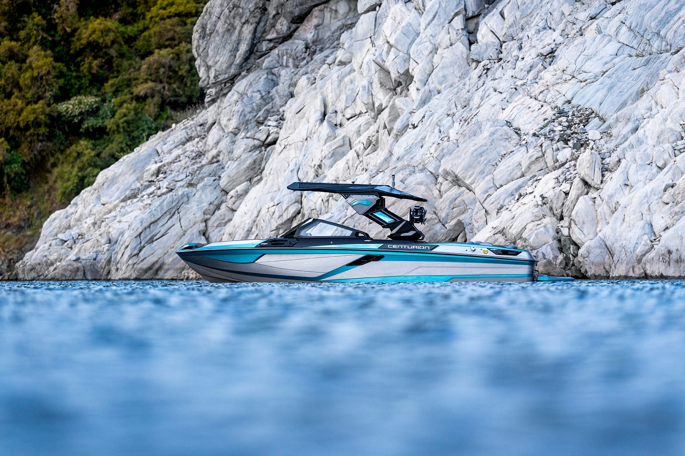
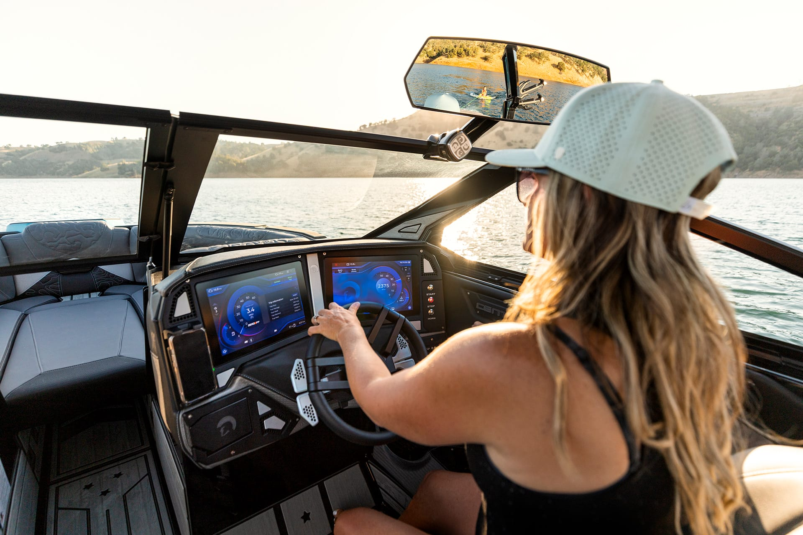

Centurion Ri245 Control Interface
Introduction and purpose
Modern wakeboats rely on highly integrated digital control systems that manage ballast, surf configuration, throttle control, engine monitoring, audio systems, and onboard electronics. Those systems coordinate many variables in real time behind a clear, usable interface.
This project is a desktop-based Electron application that models the structure and behavior of software found on the Centurion Ri245. That model was chosen because of direct experience with the boat at a dealership that sold and serviced them, including familiarity with its dual-screen helm layout and day-to-day workflow.
The application replicates a dual-screen control interface similar to the real Ri245 design. It simulates operational data—RPM, speed, fuel level, ballast levels, surf configuration, and alerts—and demonstrates modular architecture, event-driven programming, and centralized state management.
Purpose: design and implement a realistic wakeboat control software prototype with interactive simulation, packaged as a downloadable desktop application.
About the Centurion RI245
The Centurion RI245 is a top of the line wakeboat producing one of the best and most customizable surf waves in the industry. The RI series from centurion has been around since 2016 and has only gotten better every year since. One of the most recognizable features of the RI series is the dual screen design which allows for a lot of customization and ease of use. My goal with this software was to enhance the experience of the dual screen design with a more simple and clean interface that makes it easier to navigate and use the boat.
This software prototype is made for the Centurion RI245 utilizing the dual screens and features only found on the three RI Models from Centurion. It is a student simulation—not OEM firmware—and is only intended to illustrate how such a system can be structured.


Must-have requirements
1. Dual-screen control interface
Requirement: Implement a dual-screen user interface modeled after the Centurion Ri245 helm layout. The interface will allow control of: ballast systems; surf systems; throttle; engine monitoring; electronics; audio controls.
Success measure: During demonstration, show that all major boat systems are accessible through the UI and respond immediately to user interaction without reloading the application.
2. Operational simulation engine
Requirement: Implement a simulation engine that allows throttle control and simulated driving behavior. The system will: accept throttle input; simulate RPM changes; simulate speed changes; update dashboard values dynamically based on simulation data.
Success measure: When throttle input is adjusted, RPM and speed values update in real time. Simulation values change continuously while throttle position changes.
3. Saved rider profiles
Requirement: Allow users to create, save, and load preset profiles that contain saved ballast and surf settings.
Success measure: Demonstrate: creating a new profile; saving configuration data; restarting the application; loading the saved profile; observing that ballast and surf settings are restored correctly. Profiles must persist between application sessions.
4. Settings page with dealer access lock
Requirement: Implement a settings page with two access levels: user settings (theme selection and interface preferences); dealer settings (model selection, features enabled) protected by an access code.
Success measure: Demonstrate: correct code unlocks dealer settings; incorrect code denies access; theme changes update the interface immediately.
5. Electron desktop application deployment
Requirement: Build and package the software as a downloadable Electron desktop application.
Success measure: Install and run the application locally on a desktop machine without requiring a web server or internet connection.
6. Real-time system monitoring dashboard
Requirement: Implement a consolidated system dashboard that displays: speed; RPM; fuel level; ballast fill levels; active surf configuration; warnings in the software when things go wrong in simulations.
Success measure: During simulation, all dashboard values update continuously and remain synchronized with the internal system state. Run simulations that have engine issues causing the software to alert the user.
Stretch requirements
1. Advanced alert and fault simulation
Requirement: Simulate system warnings such as: engine codes; Guardian mode which limits the boat’s speed to prevent damage.
Success measure: Trigger predefined thresholds and demonstrate that visual alerts appear when limits are exceeded.
2. Multi-profile comparison
Requirement: Allow two saved profiles to be displayed side-by-side for comparison.
Success measure: Load two profiles simultaneously and show clear differences in configuration values.
3. Simulation data export
Requirement: Allow exporting simulation session data to a CSV file.
Success measure: Demonstrate exporting a file containing timestamped RPM and speed values.
4. More customizable software
Requirement: Make the software more customizable so the user can change the layout, place elements where they want, and set it up in a way that makes sense to them.
Success measure: The user can move items around on the pages and make it look how they want to without affecting the functionality of the software.
Overview of the product
Workflow
- User launches the Electron desktop application.
- Dual-screen interface loads.
- User configures ballast and surf settings.
- User adjusts throttle to simulate driving.
- Simulation engine processes input.
- Dashboard updates RPM, speed, and system data.
- User may save configuration as a profile.
- User may access the settings page.
Resources
- Electron for desktop packaging
- HTML, CSS, and JavaScript for frontend architecture
- Node.js runtime
- Python for simulation
The architecture is modular, component-based, and uses centralized state management.
Data at rest
- Rider profiles stored through local storage (including when running as a desktop app in Electron).
- Application settings stored locally.
Data on the wire
All processing occurs locally within the Electron runtime. No external transmission is required.
Data state
A centralized state service stores: boat configuration state; simulation state; user session state.
User input → State update → Simulation recalculation → UI render.
GUI (HMI / HCI)
- Left screen: driving interface (speed, RPM, throttle visualization).
- Right screen: ballast, surf, electronics, and settings.
- System dashboard with real-time data.
Mockups or screenshots are included in the final submission.
Verification
Demo plan
Demonstrate using the boat software as someone would if it were installed in a boat on the water, showing that everything is accounted for. Main items to show:
- Launching the desktop application
- Navigating the dual-screen interface
- Adjusting ballast and surf systems
- Simulating throttle input
- Observing real-time RPM and speed updates
- Saving and loading profiles
- Unlocking dealer settings
- Triggering simulated situations
Testing
Each requirement will be verified through live functional testing. Tests include: UI responsiveness; simulation logic within defined ranges; state consistency across components; dealer access control validation; desktop packaging functionality.
A requirement is considered fulfilled when it can be demonstrated live without inspecting the source code.
Sources / resources
- Electron Documentation
- Python Documentation
- Node.js Documentation